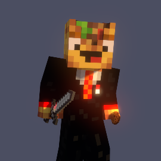

| Naam: | Luc Stoffels |
| Dit ben ik: |  |
| Mijn Klas: | 4HA |
| Mijn hobby's: |
|
| Mijn vervolg opleiding: | Ik wil graag HBO-ICT (Game Development of cybersecurity) of HLO gaan doen. |
| Wat ik al weet van Informatica: |
|
| Wat ik wil leren bij Informatica: |
|
| Favorite Bands/ artiesten: |
Ik heb er heel veel maar mijn favorite zijn:
|
| Favorite Liedjes: |
De liedjes die ik het leukst vindt zijn: Kali Outsiders remix, FCK2020 en nog veel meer hier de video van Kali-Outsider remix |
| Favorite kleur: | Geel |
| Geluks getal: | 69 |
| Favorite Pretpark en attractie: |
|